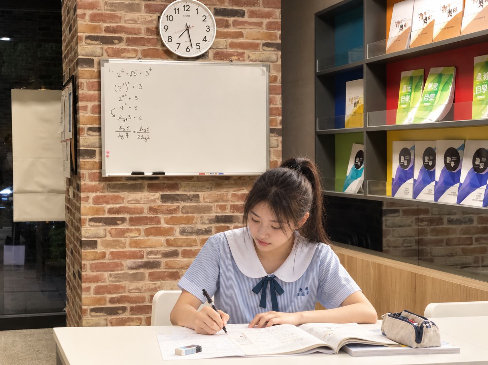
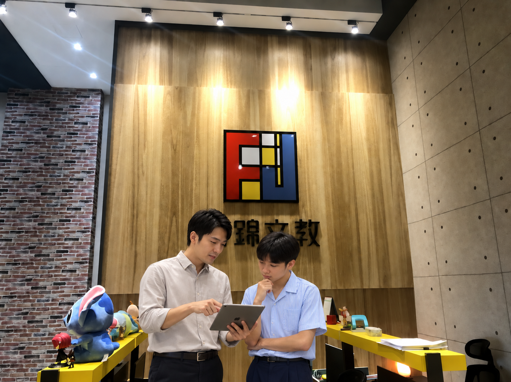

01 · CUSTOMIZE
客製化課程
依照學生的程度、弱點及目標，量身打造專屬學習計畫，每一堂課都有明確的目標與方向。
每一個學習階段，都有它最重要的任務。富錦以扎實的學科課程為核心，陪孩子在每一天的積累中，建立真正帶得走的能力。
每個孩子的學習需求都不一樣。富錦個別輔導依照學生的程度與弱點量身規劃，一對一深度陪伴，讓每一個困惑都能被看見、被解決。
由清華與陽明交通大學學長姐組成的師資陣容，提供一對一個別指導。依照每位學生的學習需求與節奏，強化優勢、補足弱點，建立學習策略，朝向目標前進。
在課業之外，老師也是同學亦師亦友的學習夥伴，分享自身的學習經驗，透過傾聽與引導，讓同學在學習過程中感受到被理解與支持，找到持續前進的力量。

依照學生的程度、弱點及目標，量身打造專屬學習計畫，每一堂課都有明確的目標與方向。
不只是教同學解題，而是透過提問與討論，一步步釐清觀念，學會解題，更要學會如何思考，建立帶著走的邏輯力與自信心。

每次上課後提供學習記錄，讓家長清楚了解孩子的學習進度與成長軌跡。